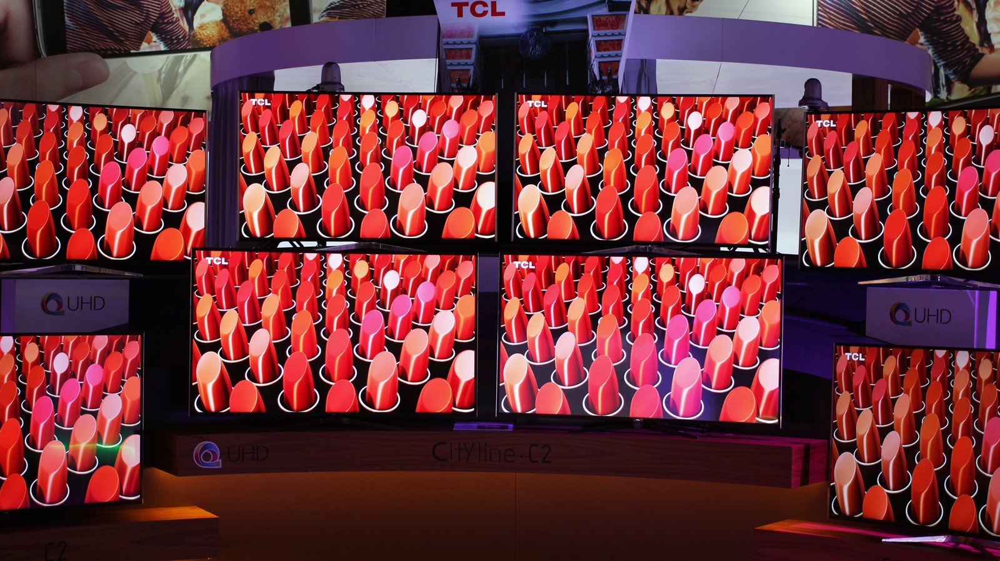

The Autopsy Report · Device #094
The TCL 55C807 Roku TV
The 55-inch 4K set that made "budget TV" stop meaning "bad TV." We haven't opened one — but the FCC filing and TCL's own paperwork sketch its outline.
What is this thing?
The TCL 55C807 is a 55-inch-class 4K UHD LED TV from TCL's C-Series, running Roku TV as its smart platform. Launched in 2017, it was the set that proved a cheap TV could have genuinely good HDR — reviewers at the time treated it as the moment budget TVs grew up. Per TCL's spec sheet: 3840×2160 panel, HDR10 and Dolby Vision, 120Hz Clear Motion Index, 802.11ac dual-band Wi-Fi, and DTS Studio Sound. TCL spec sheet (PDF) TechRadar review
Not yet on our bench
We don't own a 55C807, so nothing here comes from our hands: no disassembly, no board photos, no measurements. Everything below is built from public records — the FCC certification filing and TCL's published documentation. When a unit lands on our bench, we'll verify the hardware firsthand and update this page.
A short history
- 2017TCL ships the C-Series with Roku TV built in, betting that a good panel plus someone else's great software beats a mediocre in-house smart platform. TechRadar review
- April 28, 2017TTE Technology, Inc. requests permanent confidentiality for the 55C807's detailed block diagrams in its FCC filing. Confidentiality request
- May 29, 2017The FCC application is filed under FCC ID W8U55C807, equipment class LED TV; the user manual carries no confidentiality and goes public the same day. FCC user manual
The outside
A slim 55-inch panel with thin bezels, a pair of feet, and Roku's famously simple remote — a directional pad, a handful of buttons, and no number pad to get lost in. The photo below shows TCL 4K sets at a trade show: line representatives, not this exact model, which no freely-licensed photo we found depicts.

The board
No public teardown in our source set documents the 55C807's main board at component level, and we have no unit of our own. The FCC filing's detailed block diagrams — the document that would map the board — are permanently confidential at the manufacturer's request. Confidentiality request
Under the microscope: the chips
What's on the board, what each part does, and how sure we are. Confirmed means a primary source (FCC exhibit or manufacturer document). Likely means well-corroborated public records.
| Chip | What it does | How we know | Dig deeper |
|---|---|---|---|
| No integrated-circuit identities for the 55C807 main board are safely documented in the public records we reviewed. The detailed block diagrams are permanently confidential, and no independent teardown in our source set names the chips. We'd rather show you an empty table than a fabricated one — this section waits for the bench. | |||
The government's file on this TV
The set carries FCC ID W8U55C807, applicant TTE Technology, Inc., equipment class LED TV. The application was filed May 29, 2017; the user manual was published with no confidentiality the same day. Separately, the manufacturer asked for permanent confidentiality of the detailed block diagrams — the standard trade this system makes. FCC user manual Confidentiality request
Browse the file yourself: filing page
Debug and service modes
Roku TVs are known to expose a developer mode through a remote-control key sequence, but that knowledge is outside this report's public-record scope for this specific model, and we publish no key sequences here. Our posture throughout: we listen, we don't knock. If a bench unit ever reveals a service interface, we'll document it read-only — never bypasses, never credential or key extraction.
What public records show
- A budget 4K set with flagship aspirations: HDR10 and Dolby Vision on a 55-inch panel at a price that undercut the big brands — the spec sheet reads like a dare. TCL spec sheet (PDF)
- The smart platform is Roku TV — TCL outsourced the software layer entirely, which is why the set's "smarts" age with Roku's updates rather than TCL's. TechRadar review
- The manufacturer's confidentiality choices are visible in the filing: the user manual public, the block diagrams permanently sealed. Confidentiality request
What we haven't done
- No disassembly — we don't own a unit.
- No main-board component identification; the chip table above is intentionally empty.
- No verification of which panel or main-board revisions shipped under the 55C807 name.
- No service-mode or developer-mode investigation on this model.
By the numbers
- Model: TCL 55C807 (C-Series, Roku TV)
- FCC ID: W8U55C807 · Applicant: TTE Technology, Inc.
- Panel: 55-inch class, 3840×2160, HDR10 + Dolby Vision, 120Hz CMI
- Wireless: 802.11ac dual-band Wi-Fi (per TCL spec sheet)
- FCC application: May 29, 2017 · Block diagrams: permanently confidential
Words to know
Every term this page uses, in plain English. No prior knowledge required.
- Roku TV
- A smart-TV platform where Roku provides the operating system and app store, and the TV maker provides the panel — the same interface across many brands.
- 4K UHD
- 3840×2160 pixels — four times the pixels of 1080p. The panel's resolution.
- HDR10 / Dolby Vision
- Two standards for high dynamic range — brighter brights, more detail in dark scenes. Dolby Vision carries per-scene tuning data; HDR10 uses one setting per title.
- 802.11ac
- The 5 GHz Wi-Fi standard of this set's generation — fast enough for 4K streaming.
- FCC
- The Federal Communications Commission — the U.S. agency that regulates anything that transmits radio. Every wireless gadget sold here has to pass its tests first.
- FCC ID
- The ID the FCC assigns to each approved wireless product. Punch it into fccid.io and the whole public filing comes up.
Sources & confidence
- FCC ID, applicant, equipment class, application date, manual publication, confidentiality status: FCC filing for W8U55C807. Confirmed (primary source).
- Panel specs, HDR formats, Wi-Fi, audio: TCL 55C807 spec sheet. Likely (manufacturer document; we could not re-fetch the PDF directly, so we cite it transparently).
- 2017 launch context and reception: TechRadar review. Likely (contemporaneous press).
- Line photo: Wikimedia Commons, CC BY 2.0 — TCL 4K TVs at a trade show; not verified as the 55C807.
- Anything not listed here is unknown until the bench says otherwise. We'll say so, out loud, when that's the case.
Legal note. BareBoard is an educational project. This report is built entirely from public records — we own no TCL hardware and performed no testing. We don't publish, host, or distribute firmware, keys, passwords, or credentials. Product names and trademarks belong to their respective owners and appear here only to identify the hardware. If you believe anything here infringes your rights, contact us and we'll address it promptly.